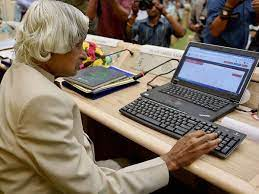

Even more, he becomes the 11th president of India and served his country. He was the most valued person of the country as his contribution as a scientist and as a president is beyond compare. Apart from that, his contribution to the ISRO (Indian Space Research Organization) is remarkable. He headed many projects that contributed to the society also he was the one who helped in the development of Agni and Prithvi missiles.
At that time the financial condition of his family was poor so from an early age he started supporting his family financially. But he never gave up education. Along with supporting his family he continued his studies and completed graduation. Above all, he was a member of the Pokhran nuclear test conducted in 1998.
